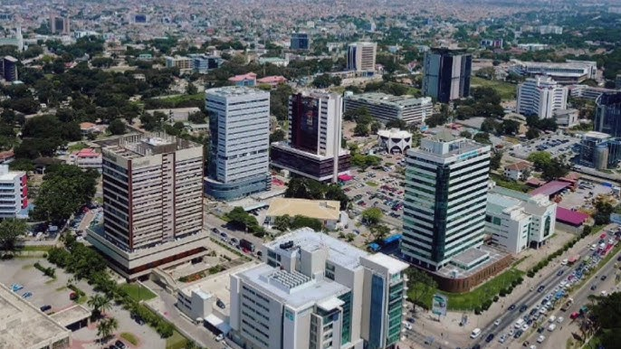

Aménagement Urbain
L’aménagement urbain constitue un pilier fondamental du développement durable et de l’amélioration du cadre de vie des populations. Chez DANDJIN DREDGING DEPTH & CONSTRUCTION LTD, nous nous engageons à concevoir, planifier et réaliser des projets urbains qui répondent aux besoins réels des citoyens, tout en tenant compte des enjeux environnementaux, sociaux et économiques.
Nos interventions s’étendent à la modernisation des infrastructures de voirie, l’optimisation des flux de circulation, la création d’espaces verts, l’équipement des quartiers en services essentiels et la mise en valeur du patrimoine urbain. Nous travaillons en collaboration avec les collectivités locales, les urbanistes et les partenaires techniques pour garantir la cohérence et la durabilité de chaque projet.
Nos services couvrent notamment :
- La conception et la réalisation de plans d’urbanisme intégrés ;
- La réhabilitation et le pavage de routes secondaires et tertiaires ;
- L’installation de réseaux d’éclairage public et de signalisation intelligente ;
- L’implantation de mobilier urbain durable (bancs, abribus, corbeilles, etc.) ;
- La construction de places publiques, trottoirs accessibles et zones piétonnes ;
- La mise en place de solutions d’assainissement urbain et de drainage.
Notre expertise, nourrie par une expérience de terrain au Ghana et en Afrique de l’Ouest, nous permet de proposer des solutions sur mesure, innovantes et conformes aux standards internationaux. Chaque aménagement que nous réalisons vise à renforcer la résilience des villes face aux défis climatiques, démographiques et économiques.
Grâce à notre approche participative, les projets sont conçus pour répondre aux attentes des populations locales, tout en favorisant l’inclusion sociale, la sécurité urbaine et l’accessibilité universelle.
← Voir tous les services